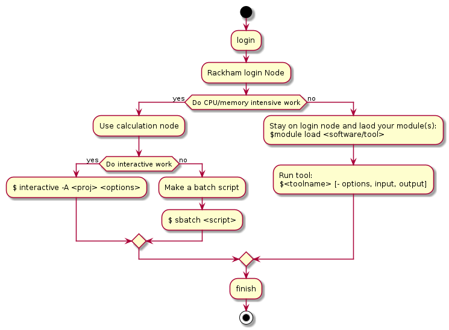

Working on UPPMAX
$HOME dir and project dir
Quota
Disk usage and number of files
$HOMEhas always 32 GB and 300,000 filesYou typically have one project per project, their size dependent on type of project
Compute projects both have disk space (128 GB) and computing time attached to them
Check your quota with
$ uquota
Core hours
You get core hours only from compute project
When they are used you can still get “BONUS” jobs if the resources allow.
You can find your current projects (and other projects that you have run jobs in) with the program
projinfo.
$ projinfo <username>
or
$ projinfo <project name>
For example, if your project is named NAISS 2017/1-334 you specify
naiss2017-1-234
What kind of work will you perform?

UPPMAX Cluster overview again!
![graph TB
Node1 -- interactive --> SubGraph2Flow
Node1 -- sbatch --> SubGraph2Flow
subgraph "Snowy"
SubGraph2Flow(calculation nodes)
end
thinlinc -- usr-sensXXX + 2FA----> SubGraph1Flow
Node1 -- usr-sensXXX + 2FA----> SubGraph1Flow
subgraph "Bianca"
SubGraph1Flow(Bianca login) -- usr+passwd --> private(private cluster)
private -- interactive --> calcB(calculation nodes)
private -- sbatch --> calcB
end
subgraph "Rackham"
Node1[Login] -- interactive --> Node2[calculation nodes]
Node1 -- sbatch --> Node2
end](_images/mermaid-cd1265279c453823b4cb3aeee063da2eec670533.png)
Keypoints
Use your disk spaces wisely
home folder just for general stuff and files needed by several projects
always read and write protected for others by default
otherside project folder which will more easily become public for other’s
by default available for all project members.
Use the computing resources wisely
low intensity work on login node
high intensity work on compute nodes (core hours are counted)
for development use the interactive sessions
otherwise make batch jobs!
Common problems
Conda environment clash with loaded python modules
Forgotten environment variables defined in your
.bashrcmay give unexeptected errors when you run other programs or new versions of a programA full
$HOMEfolder may cause unexpected errorscheck with
uquota